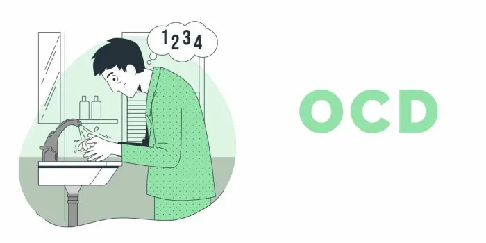

Role of Psychiatrist in Treatment and Diagnosis of OCD
Obsessive-Compulsive Disorder (OCD) is a challenging mental health condition characterized by intrusive, repetitive thoughts (obsessions) and ritualistic behaviors (compulsions). It can significantly impact a person’s daily life, but with the help of a skilled psychiatrist, individuals with OCD can find effective treatment and regain control. In this article, we will explore the role of OCD psychiatrists, the various types of OCD, common symptoms, and the treatment options available.
The Role of an OCD Psychiatrist
OCD psychiatrists are medical doctors with specialized training in diagnosing and treating OCD and related disorders. They play a crucial role in the management of OCD, which involves several key responsibilities:
1. Diagnosis
Diagnosing OCD accurately is the first step toward effective treatment. OCD psychiatrists use their expertise to conduct comprehensive assessments, including clinical interviews and psychological assessments, to confirm the presence of OCD. They also rule out other conditions that might have similar symptoms.
2. Treatment Planning
Once diagnosed, the psychiatrist collaborates with the patient to develop an individualized treatment plan. This plan considers the severity of symptoms, the specific type of OCD, and the patient’s goals and preferences.
3. Medication Management
OCD often responds well to medication, such as selective serotonin reuptake inhibitors (SSRIs) and serotonin-norepinephrine reuptake inhibitors (SNRIs). Psychiatrists prescribe and manage these medications, monitoring their effectiveness and adjusting doses as needed.
4. Psychotherapy
Cognitive-behavioral therapy (CBT), particularly exposure and response prevention (ERP), is the gold standard psychotherapy for OCD. Psychiatrists often work with psychologists or therapists to provide CBT. They may also offer supportive therapy to address emotional challenges related to OCD.
5. Ongoing Monitoring
OCD is a chronic condition that may require long-term management. Psychiatrists provide continuous monitoring to assess progress, make treatment adjustments, and prevent relapses.
Types of OCD
OCD can manifest in various forms, each characterized by unique obsessions and compulsions. Some common types of OCD include:
1. Contamination OCD
- Obsessions encompass an intense dread related to germs, filth, or contamination.
- Compulsions: Excessive handwashing, avoiding certain places, or wearing gloves.
2. Checking OCD
- Obsessions: Constant doubt and fear that something terrible will happen.
- Compulsions: Repeatedly checking locks, appliances, or switches.
3. Hoarding OCD
- Obsessions: Persistent difficulty in discarding possessions.
- Compulsions: Accumulating excessive items, leading to clutter and distress.
4. Symmetry and Orderliness OCD
- Obsessions: The need for things to be symmetrical or arranged in a particular way.
- Compulsions: Rearranging objects or performing actions until they feel “just right.”
5. Harm OCD
- Obsessions: Anxiety surrounding the potential for causing harm to oneself or others.
- Compulsions: Mental rituals or avoidance behaviors aimed at preventing harm.
6. Religious or Moral OCD (Scrupulosity)
- Obsessions: Excessive concern about moral or religious purity.
- Compulsions: Engaging in ritualistic religious behaviors or seeking reassurance from religious figures.
Symptoms of OCD
Regardless of the specific type, OCD symptoms typically include:
- Intrusive and distressing thoughts or images.
- Compulsive actions or rituals enacted with the goal of alleviating anxiety, accompanied by a fervent wish to counter or disregard the obsessions, yet feeling irresistibly driven.
- Impairment in daily functioning and relationships due to OCD-related behaviors.
Treatment for OCD
Effective treatment for OCD often involves a combination of medication and psychotherapy:
1. Medication
SSRIs and SNRIs: These antidepressant medications can help reduce the intensity of obsessions and compulsions. The complete advantages may not become evident until several weeks have elapsed.
2. Cognitive-Behavioral Therapy (CBT)
Exposure and Response Prevention (ERP): ERP stands as a fundamental pillar within the framework of OCD-focused Cognitive-Behavioral Therapy (CBT). It involves gradually exposing the patient to their obsessions without allowing them to engage in compulsions. Over time, this helps reduce anxiety and the need for compulsive behaviors.
Cognitive Therapy: This form of therapy focuses on challenging and modifying obsessive thought patterns.
3. Supportive Therapy
Family Support: Family involvement and education can be crucial for individuals with OCD, as it helps create a supportive environment.
4. Self-Help Strategies
Self-Help Books: Many individuals find relief by reading self-help books and working through exercises that target OCD symptoms.
It’s essential to consult with an OCD psychiatrist or mental health professional for a comprehensive assessment and tailored treatment plan. Early intervention and adherence to treatment are key to managing OCD effectively.
In conclusion, OCD psychiatrists Dr. Gorav Gupta play a vital role in diagnosing and treating OCD, a challenging condition that can significantly impact a person’s life. By understanding the different types of OCD, recognizing common symptoms, and seeking appropriate treatment, individuals with OCD can regain control and improve their quality of life. Effective treatment, often a combination of medication and therapy, offers hope for those affected by OCD and helps them lead fulfilling lives.